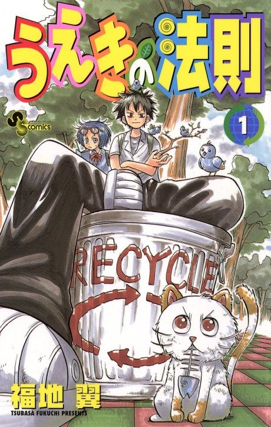

The Law of Ueki
うえきの法則
We haven't found where the anime ends in the manga yet.
7.3AniList score
—Animeter, no votes yet
51episodes
Is it worth pushing through?
Built from what visitors report across all 51 episodes.
Loading reports…Checking what other people said about this one.
Sign in above with your email to add your report.